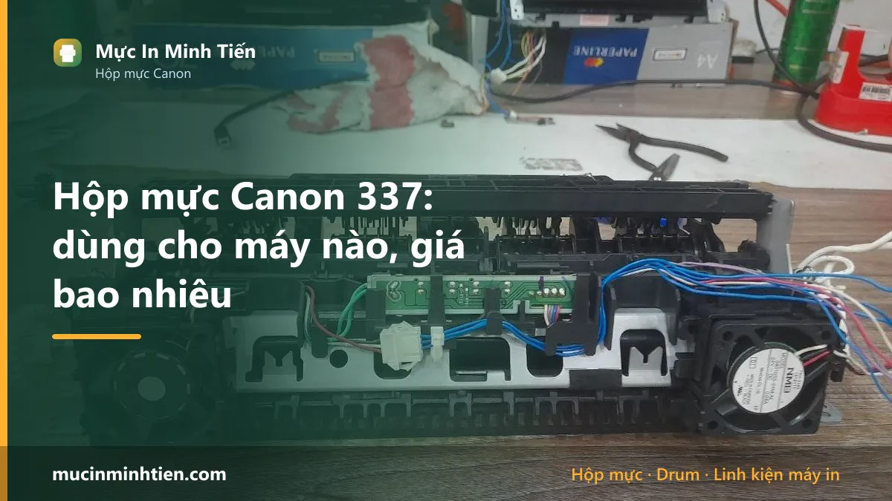
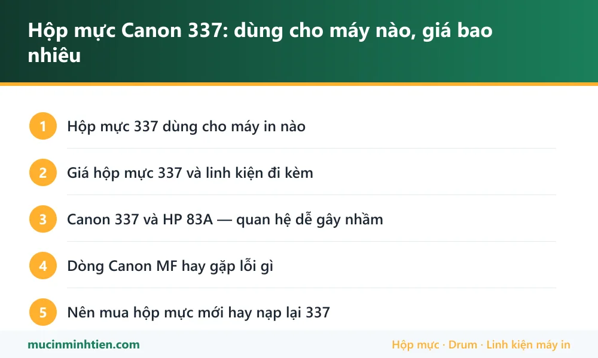

Hộp mực Canon 337: dùng cho máy nào, giá bao nhiêu

Hộp mực Canon 337 (Cartridge 337) dùng cho các máy đa năng Canon MF211, MF212w, MF215, MF216n, MF217w, MF226dn, MF229dw, MF232w, MF244dw, MF246dn, MF249dw và LBP151dw. Một hộp đầy in được khoảng 2.400 trang.
Hộp mực 337 dùng cho máy in nào
| Dòng máy | Model cụ thể | Ghi chú |
|---|---|---|
| Canon imageCLASS MF | MF211, MF212w, MF215, MF216n, MF217w | Dòng đa năng nhỏ gọn cho văn phòng |
| Canon imageCLASS MF | MF221d, MF226dn, MF229dw, MF232w, MF236n | Bản có in hai mặt và mạng |
| Canon imageCLASS MF | MF241d, MF244dw, MF246dn, MF249dw | Đời mới hơn, dùng chung mã mực |
| Canon LBP | LBP151dw | Bản in đơn năng cùng dòng |
Giá hộp mực 337 và linh kiện đi kèm
Bảng dưới là hàng đang có tại kho 77 Bắc Hải, Phường Diên Hồng, TP.HCM, giá tham khảo cho khách lẻ. Đây là giá thật trong bảng giá công khai, không phải giá quảng cáo.
| Sản phẩm | Nhóm | Giá tham khảo |
|---|---|---|
| Combo 10 cặp (20 cái) Ron từ 35A/78A/83A/85/337/36/88 - Ron từ 35 | Linh kiện khác | 10.000 đ |
| Chíp 337 - 337 | Linh kiện khác | 15.000 đ |
| Bộ 5 Chíp 83A/ 337A cho máy HP M127NF/Canon 211/212/ M201(CF283X/CRG 337) - Bộ 5 Chíp 83A | Linh kiện khác | 75.000 đ |
| Combo 5 Gạt nhỏ HP 35A/85A/36A/78A/83A/79A CA 328/337 - Gạt nhỏ 35A | Gạt mực | 30.000 đ |
| Combo 5 Gạt lớn HP 35A/85A/36A/78A/83A/79A CA 328/337 - Gạt lớn 35A | Gạt mực | 40.000 đ |
| Mực In Laser 83A - 337A - Pro MFP M127Fn - Mực laser 83A | Hộp mực & mực in máy in | 119.000 đ |
| Mực in RT- 337 Dùng cho Máy Canon MF211, 211D, 212w,215,217W,226dn,229dw, 221D,151dw, 244dw, MF232W, MF235, MF237W - RT-337 | Hộp mực & mực in máy in | 250.000 đ |
| Hộp mực RT 53A dùng cho máy in HP Laserjet P2014 / 2015 / M2727 Canon LBP 3310 / 3370 - mực RT 53A | Hộp mực & mực in máy in | 270.000 đ |
| Hộp mực Canon 337 (CRG-337) chính hãng — Minh Tiến | Hộp mực & mực in máy in | 380.000 đ |
| Quả đào sử dụng cho máy in HP 201-337-HP225dw - Quả đào 337 | Lô sấy, lô ép & linh kiện sấy | 30.000 đ |
Không thấy mã cần tìm? Dùng công cụ tra cứu theo model máy hoặc xem bảng giá đầy đủ 773 mã.
Canon 337 và HP 83A — quan hệ dễ gây nhầm
Trong bảng giá bạn sẽ thấy nhiều linh kiện ghi kèm cả hai mã 83A và 337. Lý do là hai mã này dùng chung kiểu phôi, nên gạt mực, trục từ, chip và một số bộ phận rời lắp lẫn được.
Tuy nhiên hộp mực thành phẩm thì không dùng chéo tùy tiện: HP 83A (CF283A) dành cho HP LaserJet Pro M125, M127, M201, M225; Canon 337 dành cho dòng Canon MF liệt kê ở trên. Kích thước lẫy và chip khác nhau.
Khi mua linh kiện rời, việc ghi kèm hai mã là bình thường và không sai. Khi mua nguyên hộp mực, nhớ nói đúng tên máy in của mình.
Dòng Canon MF hay gặp lỗi gì
Dòng MF2xx là máy đa năng phổ biến ở văn phòng vừa và nhỏ. Ba nhóm bệnh thường gặp:
- Bản in mờ dần — trục từ mòn hoặc mực gần cạn. Đây là bệnh phổ biến nhất sau vài lần nạp mực.
- Kẹt giấy ở khay và bộ nạp tài liệu — quả đào chai. Máy MF có thêm khay nạp tài liệu tự động phía trên nên có hai bộ con lăn cần vệ sinh, không chỉ một.
- Máy báo lỗi hộp mực — chip bẩn tiếp điểm hoặc hộp mực tương thích không được nhận.
Với lỗi bản in mờ, quy trình chẩn đoán từng bước có ở bài máy in mờ, nhạt chữ: nguyên nhân và cách xử lý — cách đọc bản in để đoán bộ phận hỏng áp dụng chung cho mọi máy in laser.
Nên mua hộp mực mới hay nạp lại 337
Canon 337 nạp lại được và khá kinh tế. Dung lượng 2.400 trang thuộc nhóm khá, phôi bền, linh kiện rời có sẵn.
Điểm cần chú ý là chip. Hộp mực 337 chính hãng có chip; nạp đầy mực mà không xử lý chip thì máy vẫn báo hết. Khi gọi thợ nạp mực, hỏi rõ có thay chip kèm không để tránh nạp xong máy vẫn không in được.
Nên thay hộp mới khi bản in có sọc đen dọc lặp lại đều (drum xước), lem mực ở mép (gạt mòn), hoặc hộp đã nạp nhiều lần và mỗi lần chỉ dùng được vài trăm trang. Với dòng máy MF dùng cho văn phòng, chất lượng bản in ổn định thường quan trọng hơn khoản tiết kiệm nhỏ từ lần nạp cuối cùng.

Câu hỏi thường gặp về hộp mực 337
Hộp mực Canon 337 in được bao nhiêu trang?
Canon 337 và HP 83A có dùng chéo được không?
Máy Canon MF244 báo hết mực dù mới nạp thì sao?
Máy Canon MF kẹt giấy liên tục thì thay gì?
Bài viết liên quan
- Máy in mờ, nhạt chữ: nguyên nhân và cách xử lý
- Máy Canon không nhận hộp mực: 5 cách xử lý tại chỗ
- Cách chọn mực in đúng máy, bền máy và tiết kiệm
- Hộp mực Canon 325: dùng cho máy nào, giá bao nhiêu
- Hộp mực Epson 003: dùng cho máy nào, giá bao nhiêu
- Tra hộp mực và linh kiện theo model máy in
- Nạp mực máy in tận nơi TP.HCM từ 80.000đ